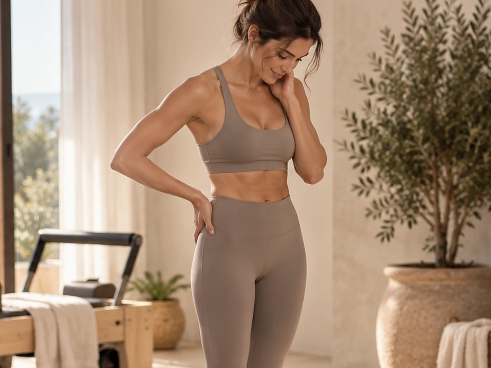
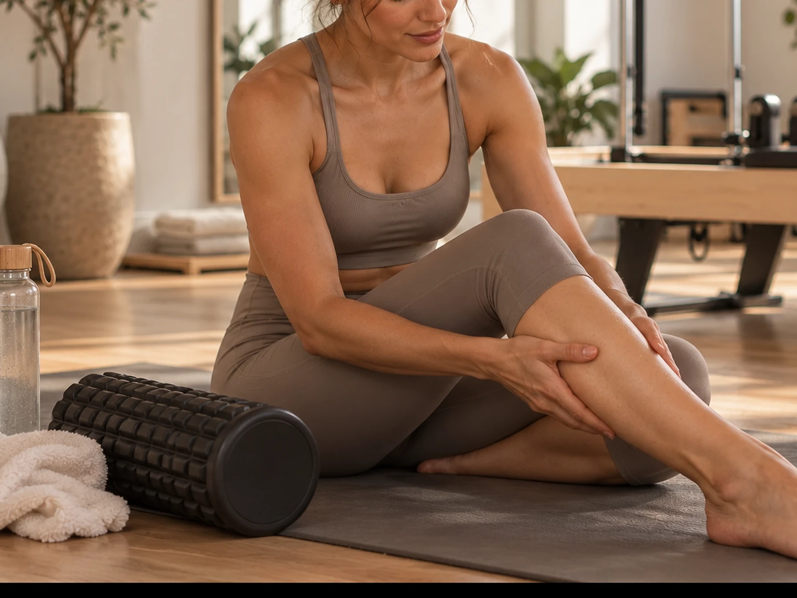

First decide what kind of sore you are
General muscle tenderness after a new or hard workout is different from a sharp pain in a joint or one specific spot. Normal soreness usually feels broad and improves as you warm up gently.
Pain that feels sudden, sharp, unstable, or worse with movement deserves more caution.
A light session can sometimes feel good
Walking, easy cycling, mobility, or a gentle Pilates session can increase circulation and help stiff muscles feel less guarded. The key is keeping the effort genuinely easy.
You should finish feeling better, not more beaten up.

Do not train through bad movement
If soreness makes you change your gait, shorten your range dramatically, or compensate during exercises, your body is not ready for the same hard session again.
Form matters because fatigue and compensation can move stress to places you did not intend to train.
Train something else if it feels normal
If your legs are mildly sore but your upper body feels good, a different training focus may be reasonable. You do not always need full rest, but you do need to respect the area that is recovering.
This is one reason a varied weekly routine is useful.
Rest is not losing momentum
Recovery is where your body adapts to the training you already did. One easier day does not erase progress.
If you keep needing extra recovery after every session, reduce the intensity or volume until the routine fits your current capacity better.
This article is general educational information, not individualized medical advice. If pain, injury, pregnancy, or a health condition affects your movement, speak with a qualified healthcare professional.